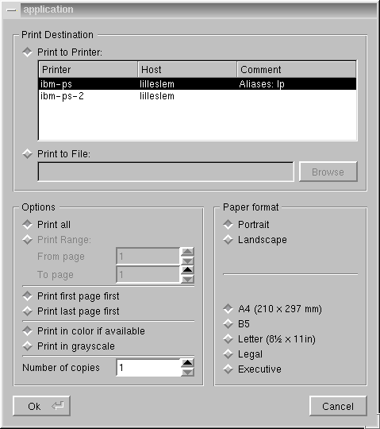

The QPrintDialog class provides an X-only dialog for specifying print-out details. More...
#include <qprintdialog.h>
Inherits QDialog.
It encompasses both the sort of details needed for doing a simple print-out and some print configuration setup.
Warning: For this release, the printer dialog is only available under X11. Use QPrinter::setup() for portability.
At present, the only easy way to use the class is through the static function getPrinterSetup(). You can however also call the global QPrintDialot::getPrinterConfigure(), or subclass in order to extend one of the group boxes.
Note that in 1.40 the printer dialog is a little too high for comfortable use on a small-screen machine. This will be improved on in 2.0.

The printer dialog, on a large screen, in Motif style.
Creates a new modal printer dialog that configures prn and is a child of parent named name.
Destroys the object and frees any allocated resources. Does not delete the associated QPrinter object.
[static]Display a dialog and allow the user to configure the QPrinter p. Returns TRUE if the user clicks OK or presses Enter, FALSE if the user clicks Cancel or presses Escape.
getPrinterSetup() remembers the settings and provides the same settings the next time the dialog is shown.
Warning: For this release, the printer dialog is only available under X11. Use QPrinter::setup() for portability.
Returns a pointer to the printer this dialog configures, or 0 if this dialog does not operate on any printer.
Sets this dialog to configure p, or no printer if p is FALSE. If pickUpSettings is TRUE, the dialog reads most of its settings from printer. If pickUpSettings is FALSE (the default) the dialog keeps its old settings.
Search the documentation, FAQ, qt-interest archive and more (uses
www.troll.no):
This file is part of the Qt toolkit, copyright © 1995-99 Troll Tech, all rights reserved.
It was generated from the following files:
| Copyright © 1999 Troll Tech | Trademarks | Qt version 1.45
|